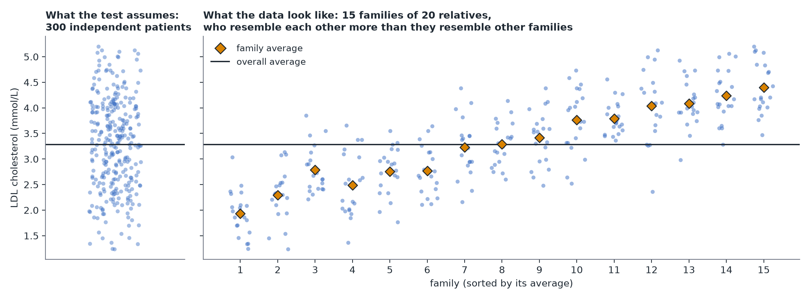
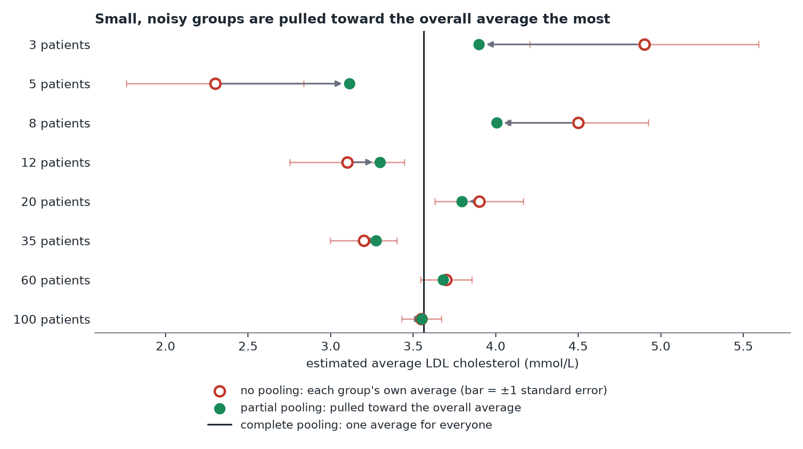

Clustered and Hierarchical Data
In plain terms: when your observations come in natural groups — relatives within families, patients within hospitals, repeated measurements on the same person — observations within a group tend to be more similar to each other than to observations in a different group. Standard tests that assume every observation is independent get overconfident if you ignore this.
Why it matters: an intuition, not just a rule
Suppose Mia's 300 patients are 20 relatives each from 15 different families, and families differ in diet, environment and shared genetic background. Treating this as "300 independent data points" overstates how much independent information is available — relatives share genes and household, so they tend to resemble each other, and the data is closer to "15 independent pieces of information about families," each refined by 20 relatives. Ignoring this makes confidence intervals too narrow and p-values too optimistic. (This holds even when genotype differs between relatives of the same family: they are still not independent, which is why genetics studies of relatives use family-aware, multilevel models.)

Three strategies, in increasing order of complexity
- Complete pooling — ignore the grouping entirely, fit one model on all the data. Simplest. Reasonable when you don't care about differences between groups and just want the overall relationship — but you should still use "cluster-robust" standard errors, which correct the overconfidence problem above without needing a different model.
- No pooling — fit a model with a separate effect for every group (equivalent to giving each group its own intercept). Best when there are only a handful of groups, and the groups themselves are what you care about (e.g. comparing these specific 4 clinics, not clinics in general). Downside: groups with little data get noisy, poorly-estimated effects, and this approach can't say anything about a brand-new group you haven't seen.
- Partial pooling / multilevel model — estimates for each group are pulled ("shrunk") toward the overall average, with small/noisy groups pulled more than large, well-measured ones. This is usually the best choice when there are many groups of uneven size, or when you want to generalize to new groups beyond the ones you measured. It is also the most complex to fit and explain, so use it deliberately rather than by default.

A practical rule of thumb
Default to complete pooling with cluster-robust standard errors if the grouping is a nuisance you need to account for, or no pooling if there are only a few groups that are themselves the point of interest. Reach for a full multilevel model when you specifically want to generalize beyond the groups you have, or have many unevenly-sized groups — it is reasonable to request one specifically, since it will not necessarily be suggested by default.
The same structure appears when the "groups" are studies: a meta-analysis with random effects is a multilevel model whose observations are one estimate per study.